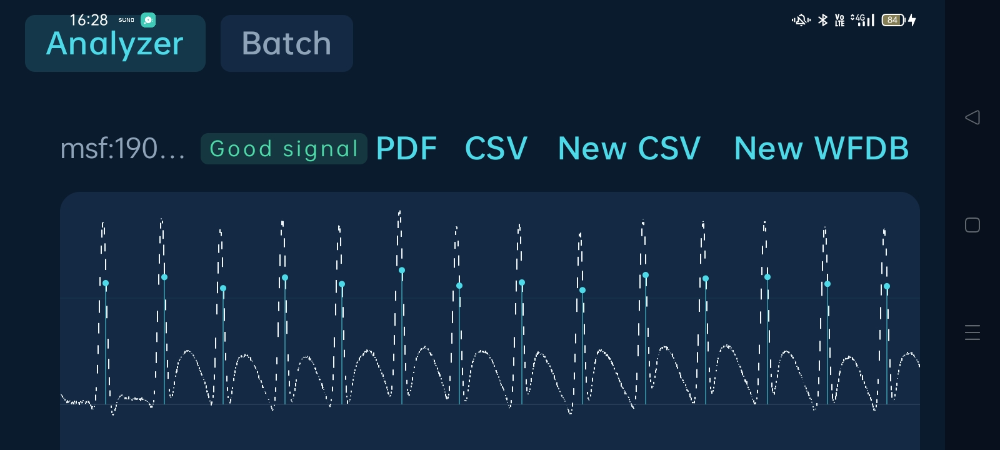
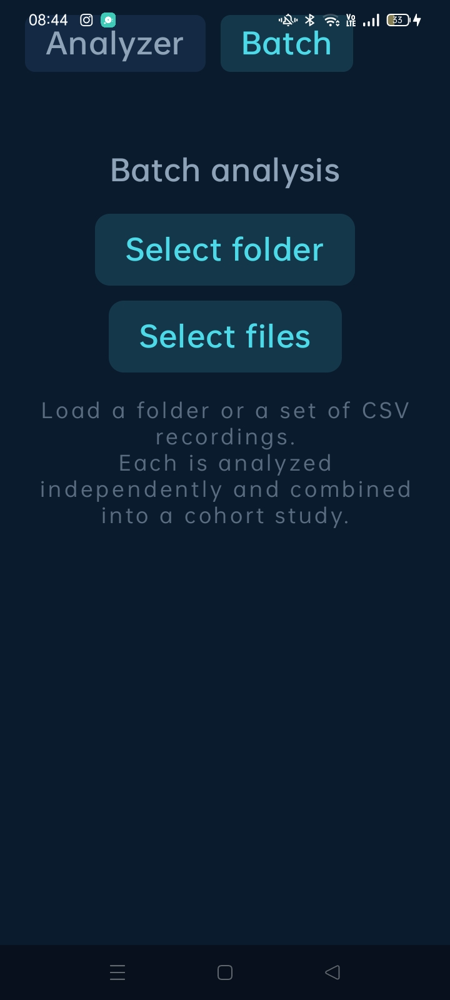
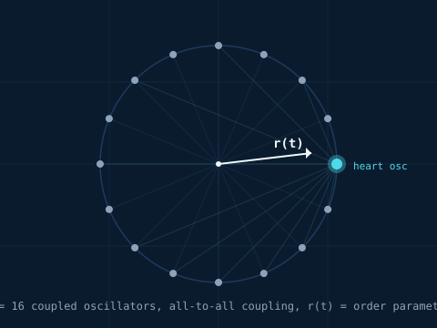
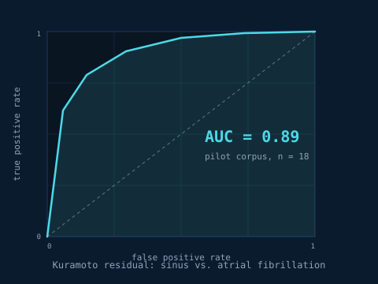

What it is
NeuroCardia reads single-lead ECG recordings, detects R-peaks, computes heart rate variability, and produces PDF and CSV reports. Everything runs on the phone. It works in airplane mode.
It is a tool for people who already work with ECG data — clinicians, researchers, biomedical engineers. If you have never opened an ECG file, this application will not be useful to you.
Screenshots


Demo
What it does
- Reads single-lead ECG recordings from CSV and WFDB files (the PhysioNet reference format).
- Detects R-peaks with a pure-Kotlin Pan–Tompkins implementation, validated against the MIT-BIH Arrhythmia Database at 2272 of 2272 reference annotations on record 100.
- Computes conventional HRV: RMSSD, SDNN, pNN50, pNN20, SD1, SD2, SD1/SD2.
- Scores signal quality on four independent axes (SNR, flatline, clipping, baseline wander), with a composite verdict.
- Runs a research feature: the Cardiac Synchronization Index, a phase-domain metric derived from a Kuramoto coupled-oscillator network.
- Processes folders in batch mode with per-record and cohort statistics.
- Exports PDF reports and CSV data.
The phase circle

Each oscillator is a point on the unit circle. The order parameter
r(t) measures how tightly the sixteen phases cluster.
When the phases are uniformly distributed, r is near
1/√16 ≈ 0.25. When they lock, r approaches 1.
The CSI reported by the app is the mean of r(t) over
the recording.
The residual finding

On a pilot corpus of nine sinus and nine atrial fibrillation recordings, the Kuramoto residual separates the two cohorts with area under the ROC curve of 0.89. The finding is preliminary and documented in the residual paper. Full-corpus replication is the next step.
What it does not do
- No network. No cloud. No accounts. No telemetry.
- No Bluetooth ECG devices. The file-export workflow is supported instead.
- No clinical diagnosis. Research and educational use only.
- No FHIR or hospital system integration.
Install
- Download the latest release APK.
- On your Android device, enable Install unknown apps for your file manager (Settings → Apps → Special access → Install unknown apps).
- Open the downloaded APK and confirm installation.
Technical documents
Four papers accompany the release. Sources are LaTeX; compiled PDFs are included.
- White paper — technical and regulatory overview.
- The Kuramoto Engine — self-contained mathematical reference.
- The Kuramoto Residual — research paper on the phase-domain residual finding.
- Sensitivity Analysis Protocol — validation methodology and results.
Build from source
git clone https://github.com/SimoesCTT/NeuroCardia
cd NeuroCardia
./gradlew :app:assembleDebug
adb install app/build/outputs/apk/debug/app-debug.apkRequires JDK 17 or newer and the Android SDK with platform 34. Gradle auto-provisions JDK 17 through the Foojay toolchain resolver if it is not already installed.
License
Software: GPL-3.0-or-later. Documentation: CC-BY-4.0.
More free apps
NeuroCardia is one of several free, open-source, no-tracking Android apps. Others include PhaseScope, PhaseFlow, PhaseVib, MedPhase, Mars Clock, Line 16, Freedom File Manager, and CTT Recorder.